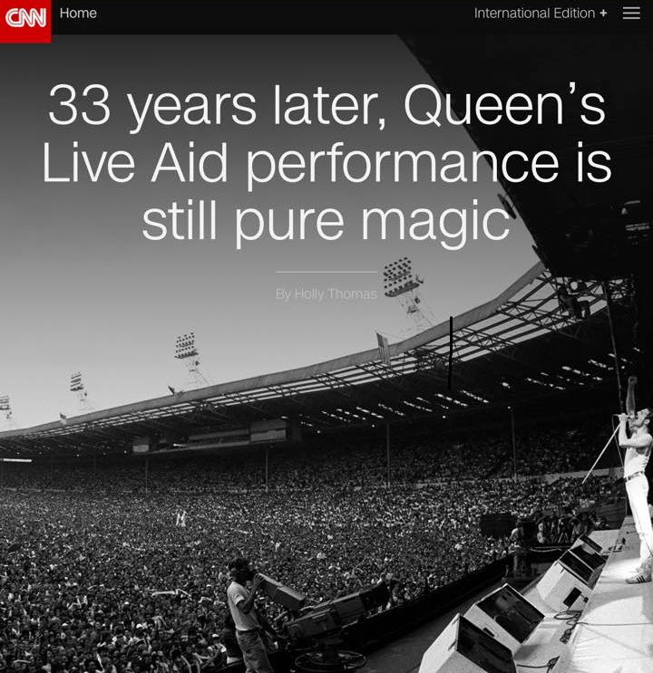
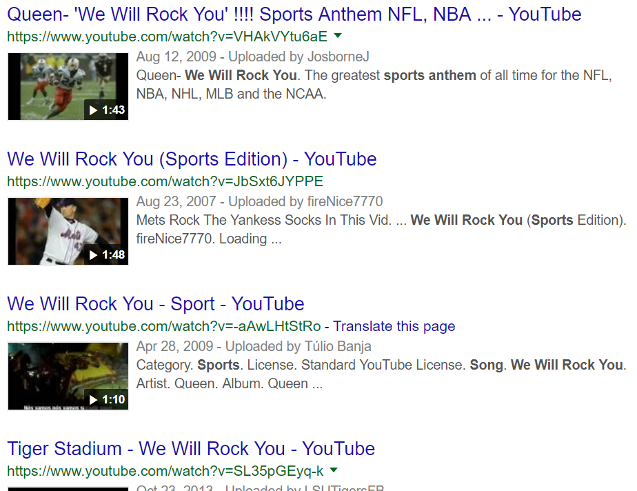
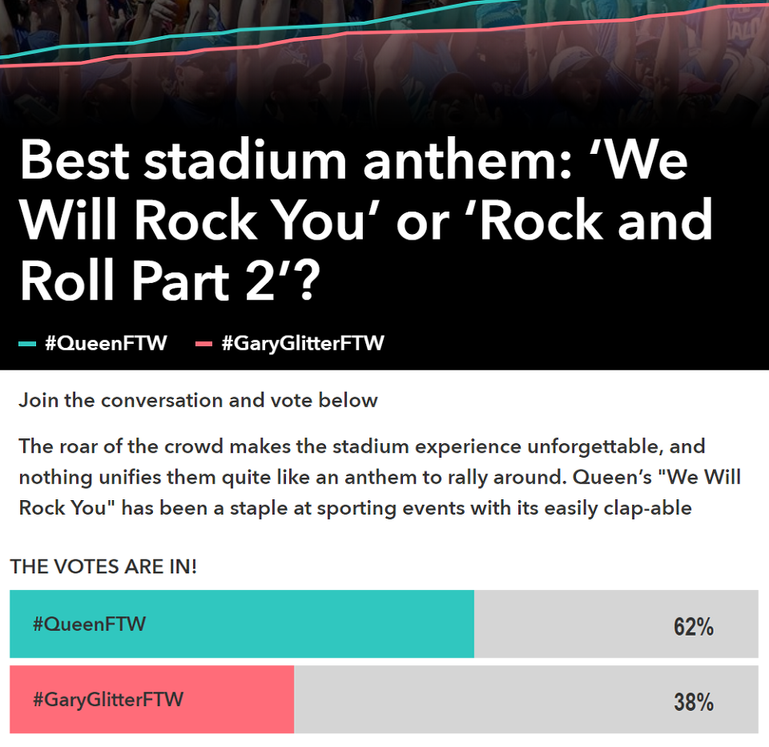
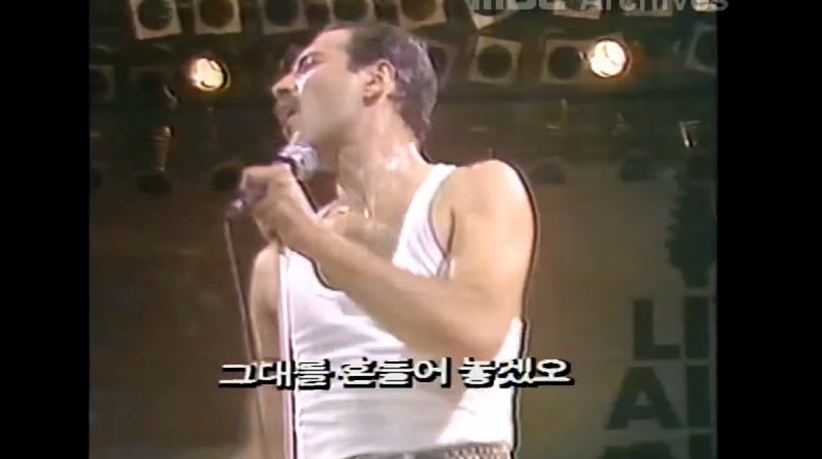
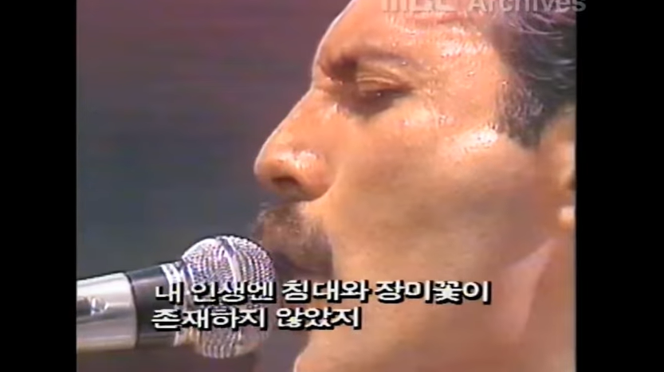

의외의 의미를 가진 노래 - We will rock you 가사 해석
게시: 2018-11-19T06:30:00+09:00

저는 전부터 퀸의 We will rock you 라는 노래를 들을 때마다 굉장히 이상한 부분이 있었습니다. 이 노래는 다들 아시다시피 전세계 스포츠 경기장에서 가장 많이 울려퍼지는 응원가와 축가로 쓰이는 신나고 힘찬 노래입니다. 그러나 그 가사 내용은 사람의 사기를 드높이기보다는 인생의 덧없음을 노래하는 것으로 들립니다. '아무 생각 없이 살면 늙어서 추해진다' 라는 내용의 가사이거든요. 그런데 미국 영국 등의 관객들이 영어를 못하는 사람들도 아닐텐데 그런 가사의 노래를 응원가로 부를까 싶어 의아했습니다.


(구글에 we will rock you sports anthem으로 검색해보면 수많은 클립이 쏟아집니다. )
그런데 이 기사를 보니 작사작곡을 한 퀸의 기타리스트 브라이언 메이는 정말 '인생의 덧없음'을 노래한 것이더라고요. 공연에서 관객과 호응하며 함께 부르기 위해 만든 힘찬 노래이긴 하지만, 일부러 그 가사는 우리의 인생을 돌아볼 수 있도록 좀 우울한 내용으로 만들었다고 합니다. 브라이언 메이는 이 곡이 온갖 스포츠 경기장에서 응원가로 쓰일 것이라고는 생각하지 못했다고 합니다. 특히 메이가 씁쓸해하는 부분은 미군이 파병될 때 이 음악을 틀어주며 병사들의 사기를 북돋우려 하는 경우가 많다는 점이라고 하는군요.
http://www.espn.com/espn/magazine/archives/news/story?page=magazine-20100208-article26
특히 충격적인 부분은 we will rock의 의미가 '너희들은 아주 뒤집어 놓겠어' '롹 스피릿을 불어넣어주겠어' 등의 의미가 아니라는 것입니다. 브라이언 메이의 설명에 따르면 이건 원래 체코 전통 자장가에서 따온 것이랍니다. 즉, rock이 흔든다는 뜻은 맞는데 롹이 아니라 '요람을 흔든다'는 뜻이라는군요. 그러니까 부모가 아기의 요람을 흔들어주는 것처럼 위로와 보살핌의 뜻이라고 합니다. 원래 체코 자장가는 영어로 번역하면 we will rock you rock you로 rock you가 두번인데, 브라이언 메이는 고민을 잠깐 한 뒤에 그것 대신 we will we will rock you로 we will을 두번 하는 것이 더 리듬에 맞는다고 보고 바꾸었다고 합니다. 그러니까 알고 보면 전세계 스포츠팬들은 모두 가사에 대해서는 별 생각없이 그냥 we will we will rock you 라는 가사를 잘못 이해하고 따라 부르는 셈입니다. 물론 그건 중요한 것이 아닙니다. 모든 가사는 듣고 부르는 사람이 자의적으로 해석할 수 있어야 하고, 또 그것이 노래 가사의 매력입니다.
브라이언 메이처럼 노래 가사에 대해서 이야기를 해주는 작사가도 있습니다만, 많은 작사가들은 가사의 의미에 대해 아무 설명을 안 하는 경우가 많습니다. 대표적인 경우가 'Miss American Pie'를 작사작곡하고 노래까지 부른 Don McLean의 경우입니다. 뭔가 심오해 보이고 무엇에 대해 풍자하는 것인지 알쏭달쏭한 이 긴 노래 가사에 대해 많은 이들이 수십년 간 지치지 않고 질문을 해댔으나, 돈 맥클린은 언제나 'poetic silence' 즉 시인의 침묵을 지켜야 한다며 일체의 설명을 회피했습니다. 저는 돈 맥클린처럼 하는 것이 더 옳다고 봅니다.


(구수한 자막이 곁들여진 1985년 MBC의 라이브 에이드 녹화방송입니다.
Source : http://www.wikitree.co.kr/main/news_view.php?id=382958
따로 가사를 모르는 상태에서 But it's been no bed of roses 라는 부분을 들으면 no bed or roses로 들리기도 합니다. 아마 저거 번역하신 분은 bed of roses (아주 호화롭고 편한 상태, 글자 그대로 꽃길)라는 관용적 표현을 모르셨나 봅니다.)
젊어서는 모두들 꿈이 크지만, 노년기에 '난 내가 원하던 것을 모두 이뤘고 아무 회한이 없다' 라고 말할 수 있는 사람은 거의 없습니다. 우리 모두를 포함한 대부분의 사람들은 늙어서 회한에 젖기 마련이지요. 우리도 꿈을 다 이루지는 못하더라도, 최소한 곱게 늙고 또 미련 갖지 말고 죽을 수 있도록 노력합시다.
이 곡의 감상은 아래 공식 퀸 채널에서 하세요.

Buddy you're a boy make a big noise
Playin' in the street gonna be a big man some day
You got mud on yo' face
You big disgrace
Kickin' your can all over the place
친구 자넨 지금 꼬마야 소란을 떨어봐
거리에서 놀면서 언젠가는 거물이 될거라고 하지
네 얼굴에 진흙이 묻었어
부끄러운 줄 알아야지
온동네에서 깡통을 차고 돌아다니는구나
Singin'
소리질러
We will we will rock you
We will we will rock you
우리가 널 흔들어줄게
우리가 널 흔들어줄게
Buddy you're a young man hard man
Shoutin' in the street gonna take on the world some day
You got blood on yo' face
You big disgrace
Wavin' your banner all over the place
친구 자넨 이제 젊고 강한 남자야
거리에서 소리를 지르며 언젠가 세상에 도전할 거라고 하지
네 얼굴에 피가 묻었어
부끄러운 줄 알아야지
온동네에서 네 깃발을 휘두르고 다니는구나
We will we will rock you
(Sing it!)
We will we will rock you
우리가 널 흔들어줄게
(소리 질러)
우리가 널 흔들어줄게
Buddy you're an old man poor man
Pleadin' with your eyes gonna make you some peace some day
You got mud on your face
Big disgrace
Somebody better put you back into your place
친구 자넨 이제 가난한 노인이야
눈으로는 동정을 구하며 언젠가는 안식을 찾을거라고 하지
네 얼굴에 진흙이 묻었어
부끄러운 줄 알아야지
누군가 자넬 원래 자네 자리로 돌려놓아야 할텐데
We will we will rock you
(Sing it!)
We will we will rock you
We will we will rock you
We will we will rock you
우리가 널 흔들어줄게
(소리 질러)
우리가 널 흔들어줄게
사족1 : 이 노래의 초반에는 아무 악기 연주 없이 발과 손으로 하는 쿵쿵짝 쿵쿵짝으로만 연주됩니다. 이 쿵쿵짝을 영어로는 stomp-stomp-clap이라고 하는군요.
사족2 : 브라이언 메이는 이 곡을 단 10분 만에 작곡했다고 합니다.
사족3 : 테러범이나 탈레반 포르 등을 가둬두고 고문까지 하며 취조하는 것으로 악명높은 쿠바 관타나모 미해군기지에서 사용하는 고문 종류 중 하나가 이 곡을 최대 볼륨으로 해서 몇 시간 동안 죄수에게 들려주는 것이라고 합니다. 브라이언 메이가 아주 미치고 환장할 노릇이겠군요.
사족4 : 아래 영상을 보면 보헤미안 랩소디 영화 제작진이 얼마나 철저하게 1985년 라이브 에이드 공연을 그대로 재현하려 노력했는지 아실 수 있습니다.
** 이번주 나폴레옹 이야기는 오늘 말고 목요일에 올라옵니다. 양해 부탁드립니다.